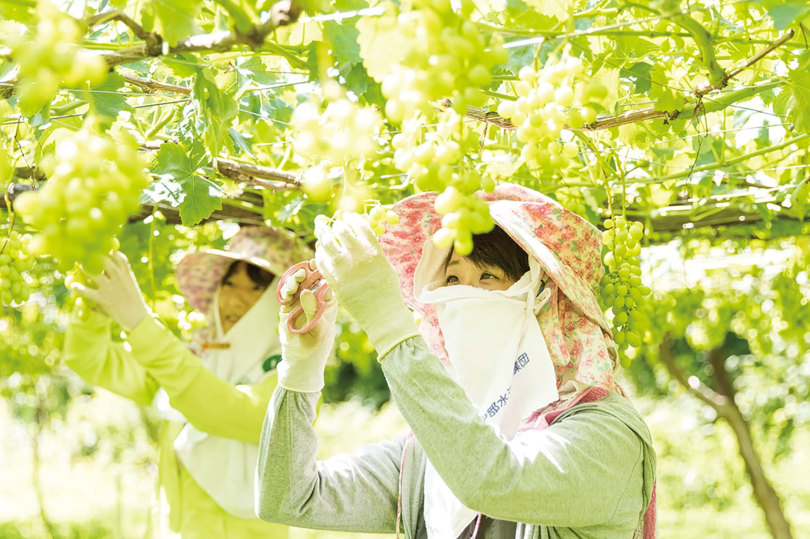
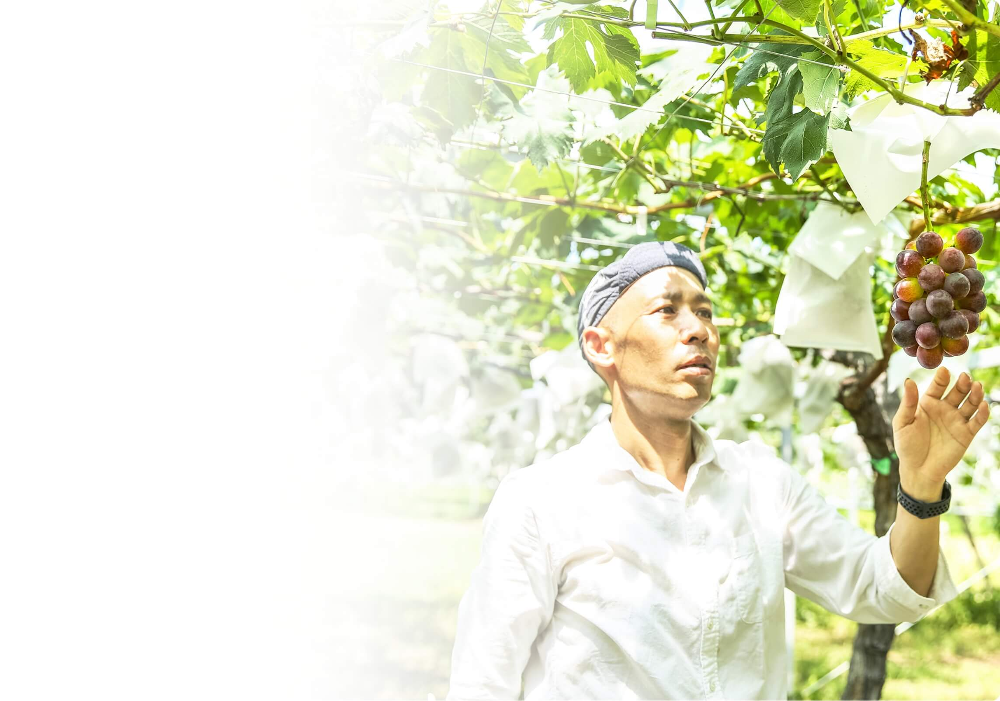
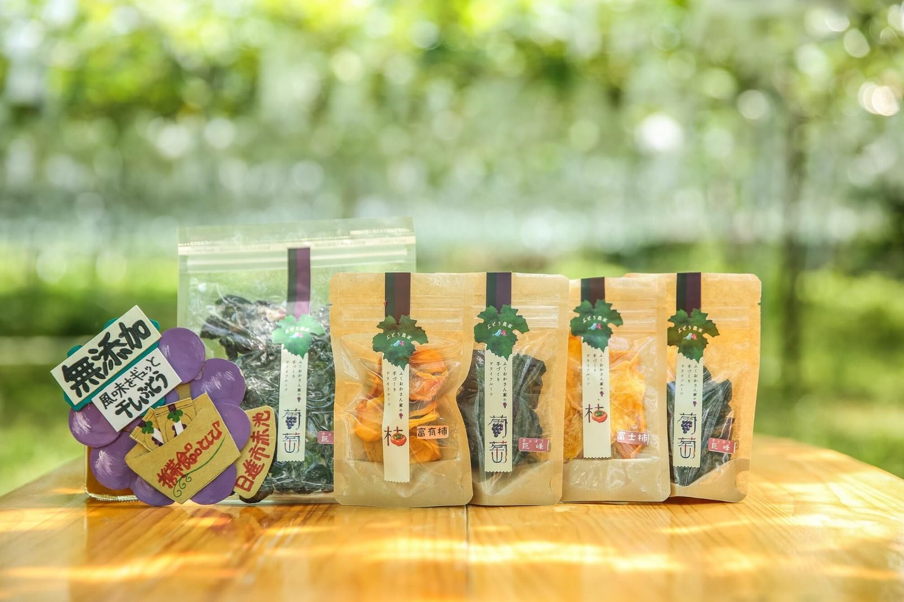
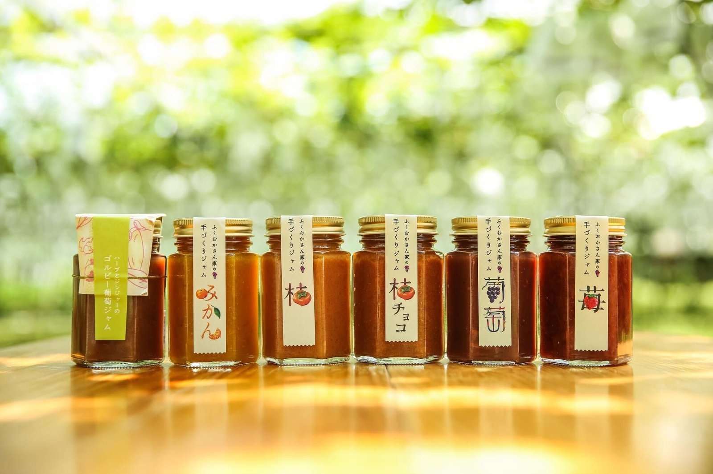
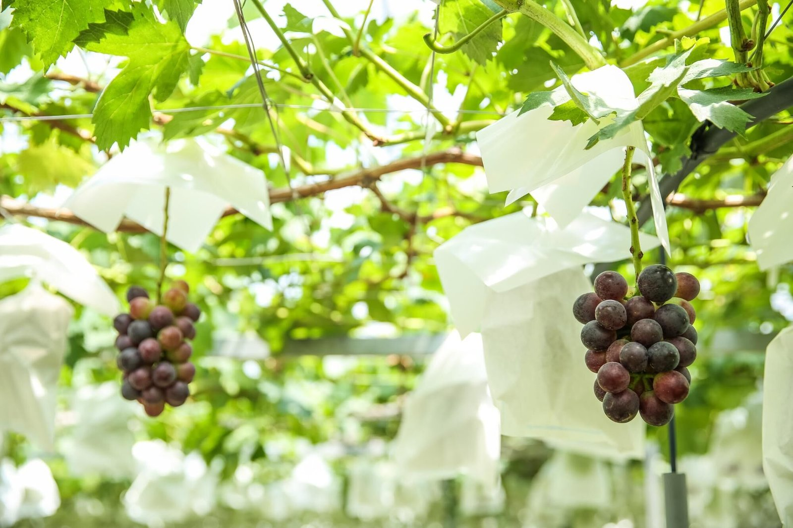

シャインマスカット
マスカット香り好きにはたまらない。皮ごと食べられます。
愛知県 日進市・豊田市
約60年、二つの畑でぶどうを育てています。直売期の短い農園だからこそ、通年で届けるオンラインショップを開きました。
葡萄のふくおかとは
わが家は愛知県の日進市と豊田市にある2つの農園で、ぶどう栽培を続けて約60年。定番から珍しいものまで、およそ40種類を育てています。
モットーは「安全でおいしく、ぶどう本来の味を追求すること」。直売所のぶどう販売は、8月上旬からなくなり次第までの短い季節です。

農園の風景
直売は一年のうちおよそ2か月。それ以外の時期は、土をつくり、樹を整え、毎日ぶどう畑で汗を流しています。



作っている人
祖父の代にぶどう作りを始めて約60年。「お客さまに好まれるぶどうを」と品種の見直しを重ね、今では40種類ほどを栽培しています。
手間ひまかけて育てたぶどうを、物語ごと味わっていただけたら幸いです。スーパーには卸さず、目の前のお客さまの顔を見てお渡ししたい。その気持ちで直売とオンラインショップを続けています。
作り手の想いを見る栽培へのこだわり
農薬は使用基準に従い、残留農薬は毎年JA愛知経済連で検査しています。
樹のバランスを決め、枝を棚へ。皮を削って越冬する病害虫も駆除します。

必要な芽と房だけを残し、粒を整えながらおいしく育てます。

鳥や虫から守り、光を入れて、熟した順に収穫します。

葉が落ちた頃、畑に肥料を。果樹は何十年も同じ土で育ちます。


ぶどうの品種
年によって栽培する品種は変わります。ここにない少量品種も販売します。旬の並びは、来てからのお楽しみです。
マスカット香り好きにはたまらない。皮ごと食べられます。

コクと甘さは負けません。ジュースや干しぶどうにもなります。

こんにゃくゼリーのような食感と甘さ。
商品紹介
HOMEには代表的な楽しみ方だけを置いています。購入はSTORESをご利用ください。





@budounofukuoka 直売開始は7月下旬にSNSで発表します。
アクセス
ぶどう販売期は並ぶことがあります。入り口の番号シールを取ってお待ちください。最新の営業はInstagramでご確認ください。
お問い合わせ・ご購入
商品・贈答・イベント・農園のこと、どれからでもどうぞ。購入はオンラインショップへお進みください。